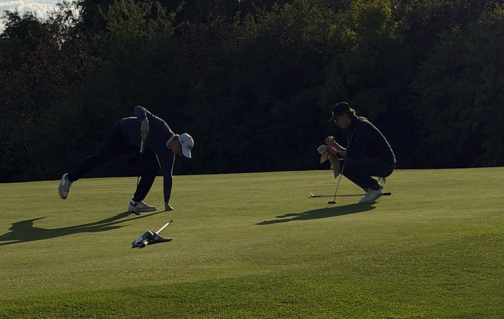
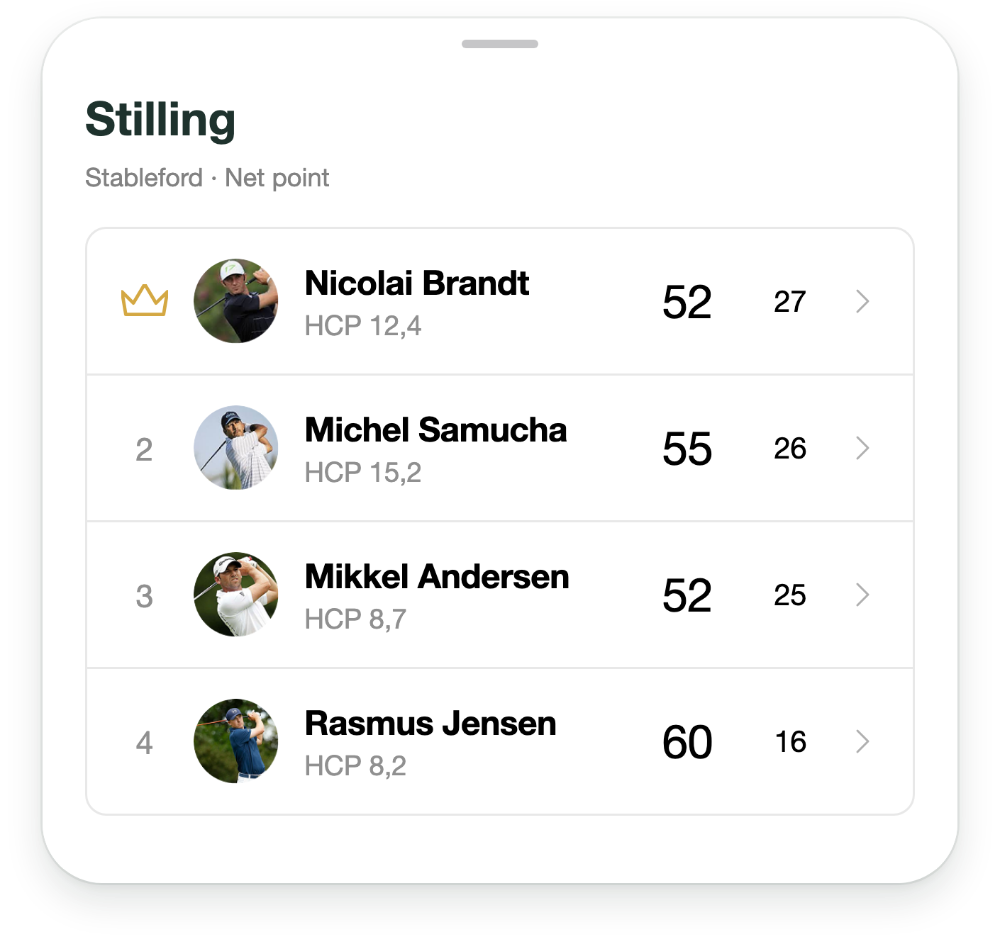

De mest brugte spilleformer i golf er slagspil, stableford, hulspil, foursome, greensome, fourball og scramble. Her er de forklaret kort, én for én.

Slagspil
I slagspil tæller du alle dine slag på runden. Den med færrest slag vinder. Spiller I med handicap, er det færrest slag netto.
Stableford
I stableford får du point på hvert hul ud fra din score i forhold til par, efter dine handicapslag er trukket fra. Den med flest point vinder. Læs mere i Stableford forklaret.
Hulspil (matchplay)
I hulspil spiller I om ét hul ad gangen. Den, der bruger færrest slag, vinder hullet. Bruger I lige mange, deles hullet. Matchen er slut, når den ene fører med flere huller, end der er tilbage at spille.
Foursome
To spillere deler én bold og skiftes til at slå. De skiftes også til at slå ud, så den ene slår ud på de ulige huller og den anden på de lige.
Greensome
Begge spillere slår ud. Holdet vælger det bedste udslag, og den spiller, hvis udslag ikke blev valgt, slår næste slag. Derefter skiftes de to til at slå.
Fourball
To spillere på hold spiller hver sin bold. Holdets score på hullet er den bedste af de to. I daglig tale kalder mange det best ball.
Scramble og texas scramble
I scramble slår alle på holdet ud. Holdet vælger det bedste slag, og alle slår næste slag derfra. Sådan fortsætter I, til bolden er i hul. Et hold kan være to, tre eller fire spillere.
Texas scramble er en scramble for fire, hvor hver spillers udslag normalt skal bruges et mindste antal gange på runden.
Hvilke spilleformer tæller til handicap?
Individuelt slagspil og stableford over 9 eller 18 huller tæller, når banen er HCP-reguleret, og en markør har godkendt din score. Hulspil står ikke blandt de tællende spilleformer i Dansk Golf Unions handicapregler.
Hvilke spilleformer kan jeg spille i Golfsocial?
I Golfsocial kan I spille stableford og slagspil med live score. Appen regner med hver spillers handicap og viser stillingen undervejs.
Når runden er slut, står slutstillingen klar, og runden kommer i feedet, hvor dine venner kan følge med og kommentere.

Spørgsmål og svar
Hvad er scramble i golf?
En holdspilleform, hvor alle slår ud, holdet vælger det bedste slag, og alle slår næste slag derfra, til bolden er i hul.
Hvad er texas scramble?
En scramble for fire spillere, hvor hver spillers udslag normalt skal bruges et mindste antal gange på runden.
Hvad er greensome i golf?
Begge spillere på holdet slår ud, holdet vælger det bedste udslag, og derfra skiftes de to til at slå til den samme bold.
Hvad er foursome i golf?
To spillere deler én bold og skiftes til at slå, også på teestedet.
Hvad er hulspil i golf?
En spilleform, hvor I spiller om ét hul ad gangen. Den, der har vundet flest huller, vinder matchen.
Hvad er forskellen på fourball og best ball?
I daglig tale bruges begge ord om en spilleform, hvor hver spiller spiller sin egen bold, og holdets bedste score på hullet tæller.
Hvad er slagspil i golf?
En spilleform, hvor du tæller alle dine slag på runden, og den med færrest slag vinder.
Golfsocial-appen
Dit golfhjem
Registrér dine runder til dit DGU-handicap, følg din udvikling, og se vennernes runder i feedet. Gratis at spille med vennerne, på iPhone og Android.